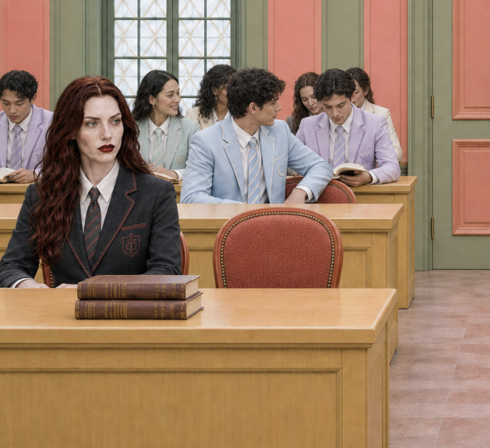

05 · The invitation · Vivienne looks back to Cassius
Back to the workflowAll stills · 01 · 02 · 03 · 04 · 05 · 07 · 08 · 09 · 10 · 11 · 11A · 11B · 12

The five references used for this frame




Full prompt used for this frame
Create a single clean photorealistic 16:9 cinematic medium shot: Vivienne TURNS BACK toward Cassius at the REAR CLASSROOM DOOR. This must visibly differ from a sideways glance at Linney across the front aisle. IMAGE 1 is the user's screenshot, authoritative seating and background cast reference: Vivienne foreground left, EMPTY coral chair beside her foreground right at the same yellow desk; powder-blue curly-haired male student directly behind the empty chair; lilac male reader behind him farther right; black-haired pale-teal woman behind Vivienne; partly cropped lilac reader at far left and other partially occluded rear classmates. Preserve those identities, uniforms and seat locations. Change their head/body attention for the new action, not their seating. IMAGE 2 is original classroom room plate, architecture, geography, palette and clean lighting authority. REAR doorway is behind the seated people, at frame RIGHT in this left-side framing. Left leaded window remains behind the group. No new door, moved window or merged desks. IMAGE 3 is Vivienne's original sheet, exact face/profile, long auburn hair and charcoal/dusty-red academy uniform authority. BLOCKING: Vivienne remains seated in the outer LEFT chair. She twists her torso and shoulders BACK TOWARD THE REAR DOOR over her LEFT shoulder (the shoulder nearest the empty chair and aisle). Her head turns far enough that the camera sees a clear SIDE/BACK THREE-QUARTER head view and some back of her auburn hair, with a readable sliver of facial profile. Her eyes aim into the DEEP BACKGROUND at the door, not screen-right horizontally at Linney and not at the camera. Show the physical shoulder rotation: do NOT keep her chest square to the lens with just sideways eyes. Her left hand may stay lightly on the empty chair top as she twists; right hand braces naturally on the desk. Anatomically plausible shoulder/arm/neck rotation; no head twisted impossibly. The empty chair remains unoccupied and visible. BACKGROUND REACTION: the blue-uniformed man behind the empty chair visibly turns his head and shoulders toward that SAME rear doorway. The lilac reader behind him pauses his book and looks back toward the door. The teal woman and the nearby curly-haired woman lean together to whisper, one briefly covering her mouth while the other smiles and flicks her gaze toward the doorway. Other visible classmates have noticed the same arrival, not unrelated eye lines. Keep each in the screenshot's seat. No one looks at Linney. Do not show Linney. Cassius is VISIBLE at the rear entrance as described in image 4. Do not add him to the foreground or any chair. CAMERA: remain on the established frontal side of Vivienne's desk, medium two-seat frame wide enough to see her backward turn, empty chair, rear students and a narrow part of the rear door at far right. The shot should immediately read 'she turns around to greet the man who entered behind her'. Her back-facing shoulder and profile are essential; do not repeat the previous front-facing invitation pose. Door remains slightly open consistent with arrival, frame fixed. FINISH: clean smooth cinematic photography, soft daylight and salmon/sage/yellow/coral environment, realistic skin and hair, softly resolved wool. No film grain, coarse noise, stippling, oversharpening, gritty filter, text, captions, panels or overlays. Generate fresh from screenshot plus original room and BOTH character sheets, not any prior invitation or turn-back render. IMAGE 4: CASSIUS ORIGINAL CHARACTER SHEET. Exact identity and costume authority: preserve his adult face, grey-green eyes, angular features, dark tousled wavy hair, charcoal academy blazer, dusty-red piping and shield crest, white shirt, striped tie, grey waistcoat, charcoal trousers and dark shoes. Cassius MUST be physically VISIBLE at the REAR DOORWAY on screen RIGHT. The open right door leaf reveals him standing just inside the threshold, taking his first step into the classroom. Show his face, shoulders, torso and preferably full figure with feet at the actual threshold floor. He is smaller in frame than foreground Vivienne, correctly scaled to the deep background and door height. No floating, no standing on furniture, no body through solid door panels. Open the right door leaf approximately 45 degrees so his face and body are not hidden. Keep the original door frame and panels, with the door at the rear, not pulled forward beside Vivienne's desk. Frame wide enough to include BOTH Vivienne and the doorway entrance; do not crop Cassius out. Vivienne and the background students are looking toward the visible Cassius, not toward an empty gap or elsewhere. Preserve the screenshot's seating: blue man behind the empty chair, lilac reader behind him, teal woman behind Vivienne, other established classmates in their seats. Girls whisper while glancing toward him. Vivienne visibly twists her head and shoulders BACK toward Cassius while her left hand rests naturally on the empty coral chair beside her. The chair stays empty. Cassius looks into the room toward the group with composed attention. Linney remains offscreen. Five inputs in order: seating screenshot, original clean room, original Vivienne sheet, original Cassius sheet, established entrance shot. The entrance shot is for blocking and doorway depth ONLY. Do not use the flawed turn-back render. IMAGE 5: ESTABLISHED CASSIUS ENTRANCE SHOT S02. This is the authority for Cassius's POSITION, DEPTH, SCALE and relationship to the door leaves. Preserve that entrance blocking when reframing toward Vivienne: Cassius is in the opening of the RIGHT door leaf, just crossing the rear threshold, NOT forward in the aisle, NOT beside the doorframe, NOT centered in front of the closed LEFT leaf. His body is aligned with the actual gap behind the open right leaf. Keep the same stance/first step and the same relationship of his feet to the threshold. Translate that spatial relationship into this left-side classroom coverage; do not merely paste a man over a different part of the doorway. Keep the rear door at its original depth behind ALL student rows. Camera remains on the established front side of Vivienne's desk, framing her backward turn, empty chair and the rear entrance together. Do not enlarge Cassius to compete with the foreground figures; his face and body are naturally smaller at that depth. FACE PRIORITY: image 4 is the absolute authority for Cassius's identity, overriding any face details in image 5. Match the precise facial geometry, eye spacing, grey-green eyes, straight nose, lips, jaw shape and dark wavy hair from his original production sheet. Do not use the faces of the blue/lilac male students for Cassius. Do not invent a generic handsome man. Preserve natural clean facial detail without changing the camera distance to make a giant portrait. Use original Vivienne sheet for her identity. All figures are adult. Keep Vivienne turning BACK toward him with her hand resting ON the empty chair's upper rail, not hovering away from it. Keep screenshot seating and uniforms, rear students watching him and girls whispering. Complete single 16:9 film frame with smooth clean photographic finish; no grain, coarse noise, stippling or over-sharpened texture. Regenerate from the five source inputs, never edit the previous turn-back output.
Revision method: full-frame regeneration from the seating screenshot, original room, both identity sheets and established entrance blocking. No previous turn-back render was used.